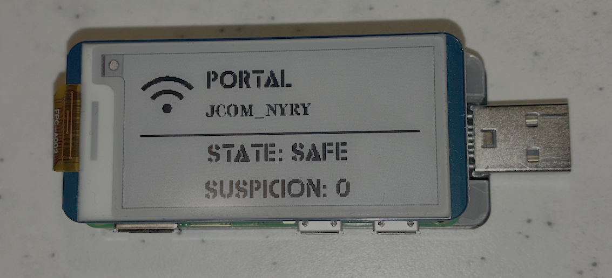

Hardware
Two Form Factors
Pocket-sized or bench-ready. Same software stack, different deployment scenarios.

AZ-02 Shield
Azazel-Gadget Shield
Raspberry Pi Zero 2 W. Pocket-sized, bus-powered. Fits in a keychain case. The field operator's choice for covert defensive carry.

AZ-02 Dock
Azazel-Gadget Dock
Raspberry Pi 3 / 4 / 4B. Higher throughput and memory headroom. Preferred for research environments and full IDS integration.